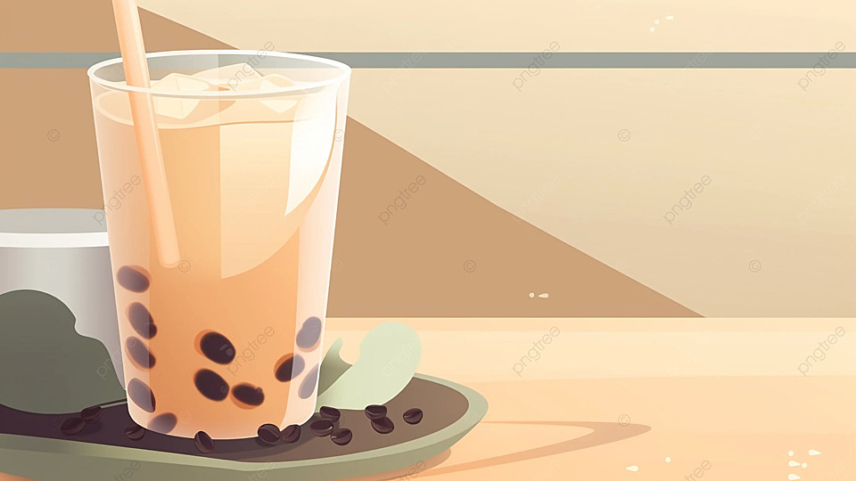
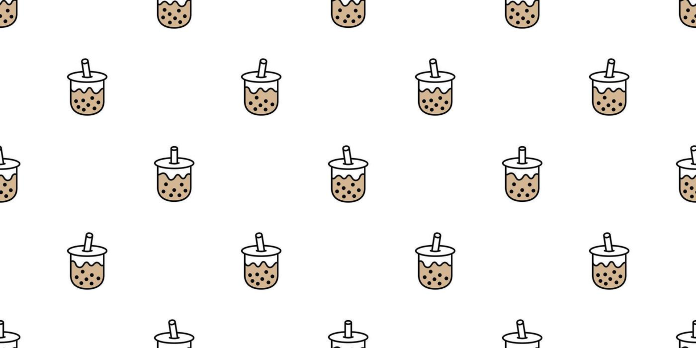
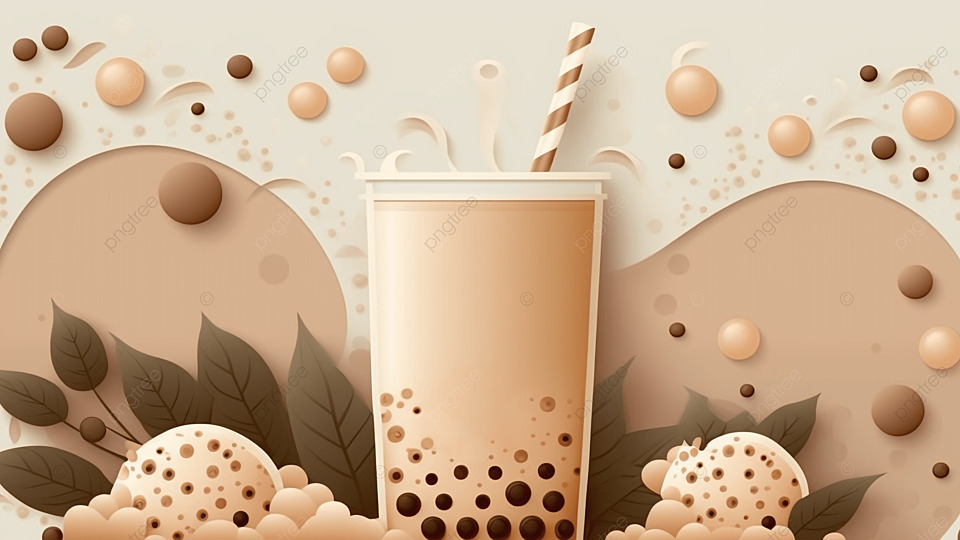
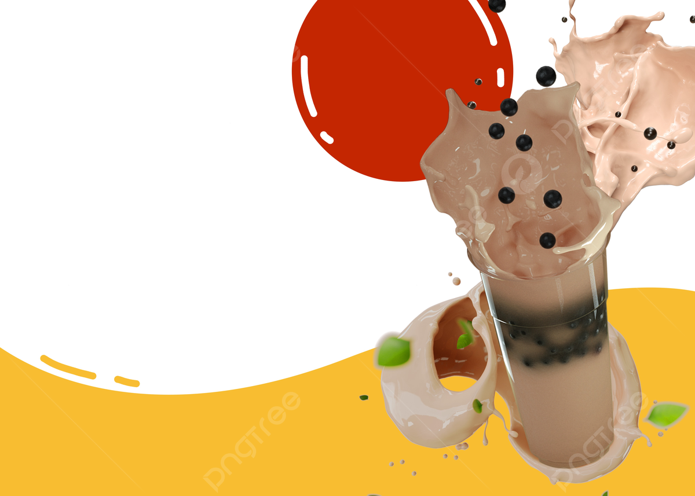

AtmosphereQuiet, cozy,
unhurried.
unhurried.
A gentle tea-break identity built around calm mornings, natural ingredients, soft light, and considered little rituals.


A little sip of something good.Brand voice · Calm & inviting
Typography / Editorial + Human
A few thoughts to sip on.
Georgia × Avenir Next · Soft, clear, approachable




Sip & Slow is a welcoming website for people who want to enjoy a calming tea break. It shares flavor inspiration, simple tea-time ideas, and gentle lifestyle reads. The design encourages visitors to pause, explore, and discover something that suits their mood.
We are Sip & Slow, a Philippines-based tea inspiration company focused on comfort, simplicity, and everyday wellness. We create a warm digital experience that helps people choose flavors and build relaxing tea rituals. Our goal is to make every small break feel thoughtful and personal.
Mark Jacob Biros (B.) Seno is the owner and creative developer behind Sip & Slow. He combines warm visual storytelling with a calm, friendly approach to digital design. His company is built around meaningful pauses, locally inspired hospitality, and everyday tea moments.